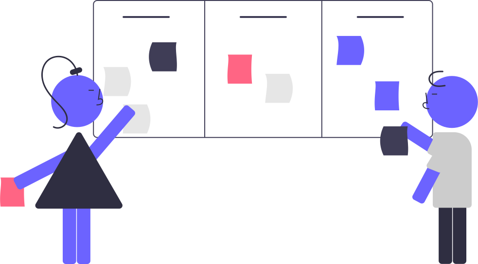
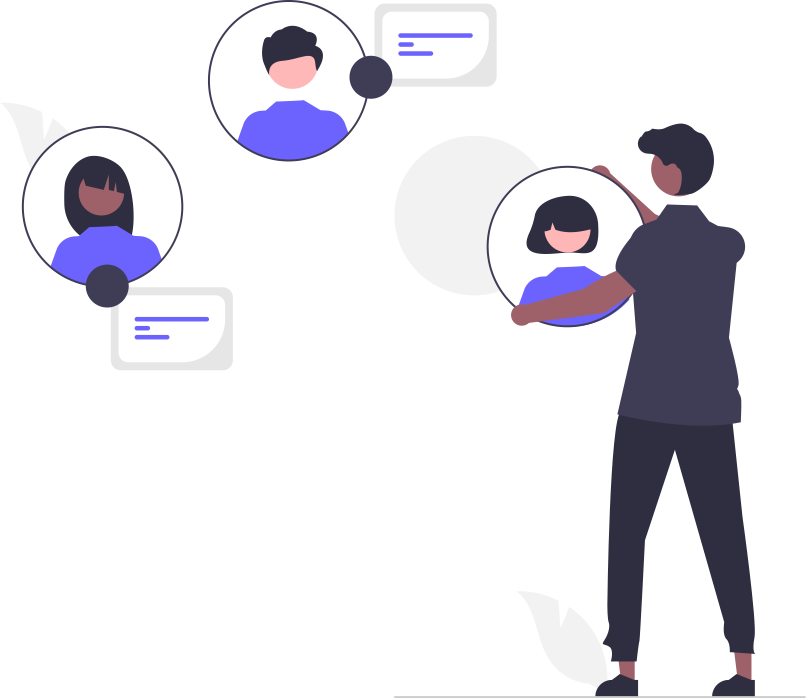

Processo de Criação de Soluções WebFusion: Da Ideia à Realidade Digital
Introdução
Na WebFusion, não somos apenas uma fábrica de software; somos arquitetos de soluções digitais. Transformamos conceitos inovadores em realidade, construindo softwares robustos, escaláveis e intuitivos. Nosso processo, rigorosamente estruturado e baseado em metodologias ágeis e melhores práticas de engenharia de software, garante a entrega de projetos de alta qualidade, dentro do prazo e do orçamento estipulado, superando as expectativas de nossos clientes. A transparência e a colaboração são pilares fundamentais da nossa abordagem, mantendo o cliente informado e integrado em cada etapa.

1. Fase de Iniciação e Planejamento: Forjando os Fundamentos do Sucesso
Descoberta e Entendimento do Negócio: A jornada começa com uma imersão profunda no negócio do cliente. Realizamos workshops colaborativos, entrevistas estruturadas e não-estruturadas com stakeholders-chave, utilizando técnicas como análise SWOT e mapeamento de processos para identificar desafios, oportunidades e metas. A análise da persona e do público-alvo é crucial para definirmos a estratégia de desenvolvimento, assegurando que o software atenda às necessidades reais dos usuários finais. (Referência: Interaction Design Foundation - User Research)
Elicitação e Análise de Requisitos: Aqui, traduzimos a visão do cliente em requisitos funcionais e não funcionais claros e concisos. Utilizamos técnicas de elicitação como *brainstorming*, *prototipagem* e *story mapping* para capturar as funcionalidades desejadas. A priorização de requisitos com a utilização do método MoSCoW (Must have, Should have, Could have, Won't have) garante que nos concentremos nas funcionalidades mais críticas. (Referência: Software Engineering (Livro de Ian Sommerville) - *Procure uma versão atualizada e acessível.*)

Modelagem e Arquitetura: Após a definição de requisitos, criamos modelos e diagramas para representar a arquitetura do sistema. Utilizamos a notação UML (Unified Modeling Language), incluindo diagramas de classes, diagramas de sequência e diagramas de componentes, para descrever a estrutura, o comportamento e a interação dos diferentes módulos do software. (Referência: The Unified Modeling Language User Guide (Livro de Booch, Rumbaugh e Jacobson) - *Procure uma versão atualizada e acessível.*)

Plano de Projeto (Gerenciamento Ágil com Scrum): A WebFusion utiliza o framework Scrum para gerenciar o projeto de forma ágil e iterativa. O Scrum é um framework leve, que enfatiza a colaboração, a iteração e a entrega incremental de valor. Ele é baseado em ciclos curtos de desenvolvimento chamados *sprints*, tipicamente de 2 a 4 semanas, durante os quais a equipe trabalha em um conjunto definido de tarefas para alcançar um objetivo incremental.
Papéis-chave: Nosso time de desenvolvimento inclui os seguintes papéis-chave do Scrum:
- Product Owner: Responsável por definir a visão do produto, priorizar o backlog e garantir que a equipe esteja construindo o software certo.
- Scrum Master: Facilita o processo Scrum, remove impedimentos e garante que a equipe esteja seguindo as práticas Scrum.
- Desenvolvedores: A equipe responsável pela construção do software, auto-organizada e responsável por estimar o esforço e entregar o trabalho acordado.
- Sprint Planning: A equipe planeja as tarefas que serão realizadas durante a sprint.
- Daily Scrum: Uma reunião diária curta para sincronizar o trabalho da equipe e identificar eventuais impedimentos.
- Sprint Review: Ao final da sprint, uma demonstração do trabalho realizado é apresentada ao cliente para obter feedback.
- Sprint Retrospective: A equipe reflete sobre o que funcionou bem e o que pode ser melhorado no processo Scrum.

2. Fase de Design e Desenvolvimento: Construindo a Solução
Design Centrado no Usuário (UI/UX): Priorizamos a experiência do usuário em cada etapa. Criamos wireframes para esboçar a estrutura da interface, protótipos para testar a navegabilidade e a usabilidade, e designs de alta fidelidade que refletem a identidade visual da marca. Realizamos testes de usabilidade com usuários representativos do público-alvo para garantir a satisfação e a eficiência do software. (Referência: Usability Engineering (Livro de Jakob Nielsen) - *Procure uma versão atualizada e acessível.*)

Desenvolvimento de Software (Metodologia DevOps): A WebFusion adota uma abordagem DevOps, integrando desenvolvimento e operações para garantir a entrega contínua e a alta qualidade do software. Utilizamos linguagens de programação modernas, frameworks robustos e bancos de dados eficientes, adaptados às necessidades específicas de cada projeto. O VS Code é a nossa IDE (Integrated Development Environment) preferencial, otimizando a colaboração e a produtividade da equipe. O controle de versão é realizado através do GitHub.

Documentação Técnica e de Código: Mantemos uma documentação completa e atualizada, incluindo diagramas UML, especificações de APIs, e documentação de código (Javadoc, por exemplo) para garantir a manutenibilidade e a compreensão do sistema a longo prazo.
3. Fase de Testes e Qualidade: Garantindo a Excelência
Estratégia de Testes: Implementamos uma estratégia abrangente de testes, incluindo testes unitários, testes de integração, testes de sistema, testes de performance, testes de segurança, e testes de usabilidade. Utilizamos frameworks de automação de testes para garantir a eficiência e a repetibilidade dos testes. (Referência: Automated Software Testing (Livro de Elfriede Dustin, Jeff Rashka e John Paul) - *Procure uma versão atualizada e acessível.*)

Gerenciamento de Defeitos: Utilizamos um sistema de gerenciamento de defeitos para rastrear, priorizar e resolver os bugs encontrados durante os testes. Este sistema garante transparência e comunicação eficiente entre a equipe de desenvolvimento e o cliente.
Avaliação Heurística de Usabilidade: Aplicamos as heurísticas de usabilidade de Nielsen (Nielsen Norman Group - 10 Usability Heuristics) para avaliar a facilidade de uso e a satisfação do usuário com a interface do software. A inspeção de interface e os testes de usabilidade complementam esta análise.
4. Fase de Implementação e Entrega: Lançando a Solução
Implementação e Deploy: Utilizamos metodologias eficientes para implantação, incluindo testes em ambiente de staging e monitoramento pós-implementação para garantir a estabilidade e o desempenho do sistema.

Treinamento e Suporte: Oferecemos treinamento aos usuários finais, utilizando tutoriais, documentação clara e suporte técnico especializado.
Entrega Final e Aceite: A entrega final inclui o software, a documentação completa e o material de suporte. A validação com o cliente garante o aceite do projeto.
5. Fase de Manutenção e Suporte: Parceiros a Longo Prazo
Suporte Contínuo: Oferecemos suporte contínuo aos nossos clientes, com contratos de manutenção que garantem a resolução de incidentes, atualizações de software e suporte técnico especializado. A comunicação e a agilidade são mantidas por canais específicos e acordados com o cliente.
Conclusão
Na WebFusion, nosso compromisso vai além da entrega de um produto. Construímos parcerias duradouras, baseadas na confiança, na transparência e na busca constante pela excelência em engenharia de software. Nosso processo, cuidadosamente elaborado e referenciado pelas melhores práticas da indústria, garante que suas ideias se transformem em soluções digitais de sucesso.